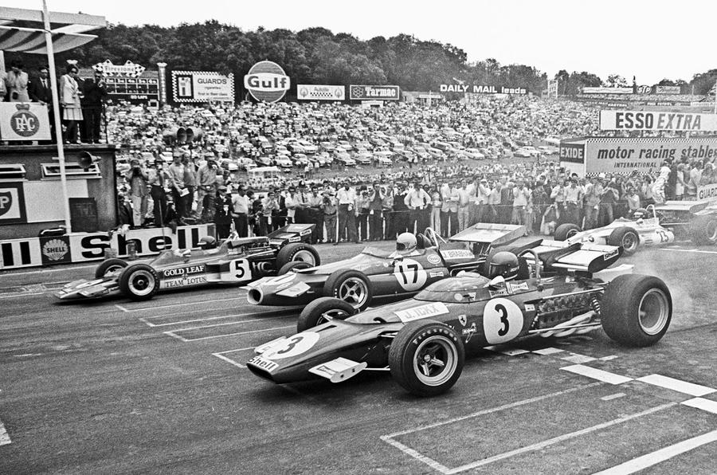
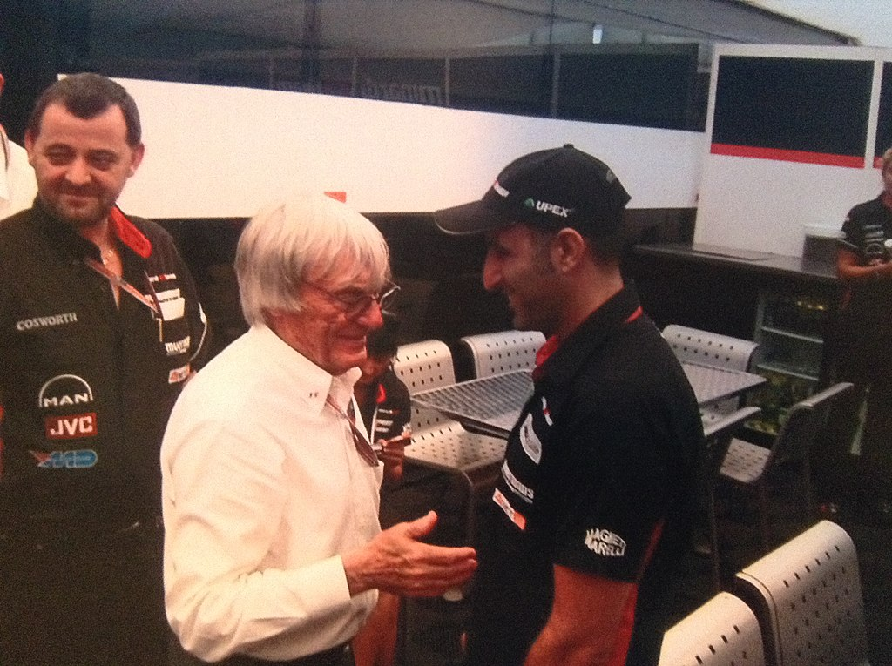
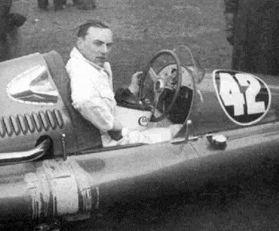
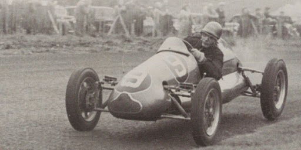
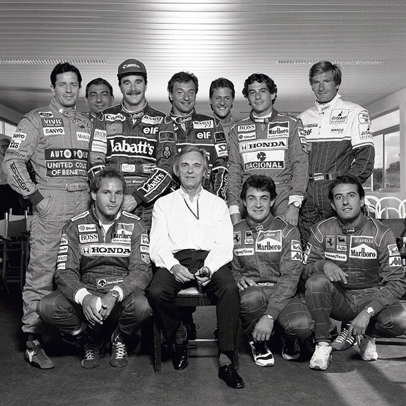
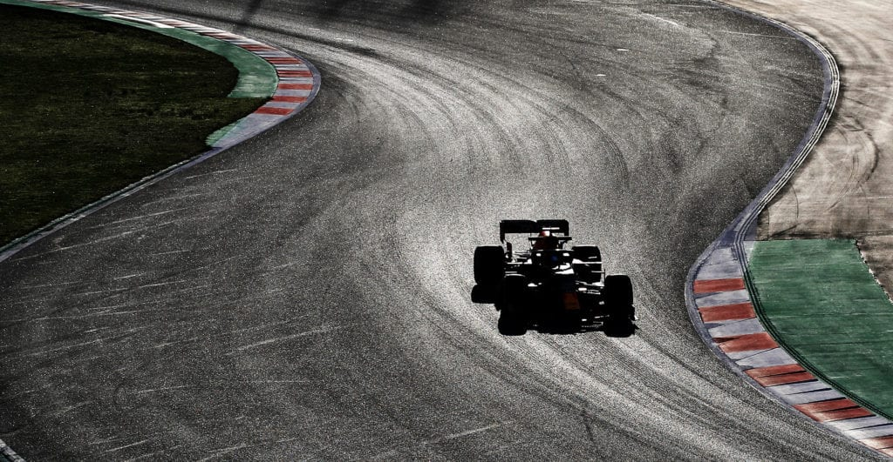

Bernie Ecclestone
Bernard Charles "Bernie" Ecclestone (Bungay, 1930. október 28. –) brit üzletember, 1978-tól 2017-ig a
Formula–1 autóverseny-sorozatot irányító cégcsoportok legfontosabb vezetője.
Bernie Ecclestone 1930-ban az angliai Ipswichben született egy halász fiaként. Ecclestone 16 évesen
otthagyta az iskolát és a helyi gázüzemben kezdett el dolgozni. Már ebben az időben megfertőzte a benzingőz
és motorral kezdett versenyezni, szabadidejében pedig motoralkatrészekkel és használt motorokkal
kereskedett. Az üzlet egészen jól ment, ezért Ecclestone otthagyta asszisztensi állását a gázműveknél és
barátjával, Fred Cromptonnal közösen Compton & Ecclestone néven saját motorkerékpár kereskedést nyitott.
Bernie később kivásárolta Comptont és Nagy-Britannia legnagyobb motorkerékpár kereskedő hálózatává építette
ki cégét. 1949-ben egy rövid időre az autóversenyzésbe is belekóstolt, miután megvásárolta a Connaught
csapatát (melynek színeiben egyszer ő is autóba ült, de a Monacói Nagydíjra nem tudta kvalifikálni magát).
Miután Brand Hatch-ben egy Formula–3 versenyen balesetet szenvedett, inkább az üzletre koncentrált.
Elsősorban autóaukciókkal, ingatlanokkal és kölcsönök közvetítésével foglalkozott.
A Formula–1-ben
Ecclestone 1957-ben visszatért a versenypályákra, de nem mint versenyző, hanem mint menedzser. 1972-ben
megvásárolta Ron Tauranactól a Brabham csapatot, amely a kezei között a Formula–1 egyik élcsapatává vált.
Miután látta, hogy milyen szervezetlen a száguldó cirkusz, 1974-ben más istálló tulajdonosokkal
megalapította a Forma 1-es konstruktőrök szövetségét, a FOCA-t.
Két világbajnoki cím a Brabhammel
Mindeközben csapata, a Brabham szép sikereket ért el, 1981-ben és 83-ban a brazil Nelson Piquet győzött a
világbajnokságon.
A Formula–1 felvásárlása
1995-ben az FIA úgy döntött, hogy bérbe adja a kereskedelmi jogokat Ecclestone cégének, a FOM-nak.
2017. január 23-án mondott le posztjáról, miután a sportág új vezetést kapott. Tiszteletbeli elnökként a
Formula–1 közelében maradt.
Elismerések
- 2000
- Nagy Arany Érdemrend az Osztrák Köztársaság Szolgálatáért
- 2006
- Szent Károly Rend parancsnok lovag
- 2008
- Imperial College díszdoktor
Képek





